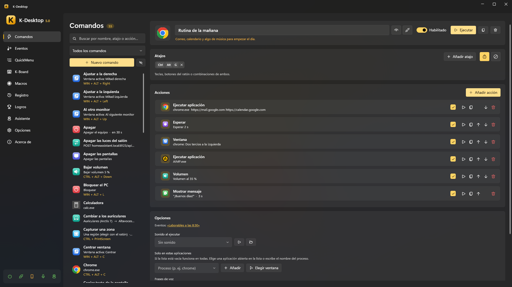

Primeros pasos
Requisitos
- Windows 10 (1809 o posterior) o Windows 11, de 64 bits.
- Para la IA de los asistentes (opcional): una gráfica con memoria suficiente para el modelo que elijas (un modelo 4B con visión ocupa unos 5 GB), u otro servidor de IA en tu red.
- Para el móvil: el PC y el móvil en la misma red. La aplicación de Android necesita Android 5.0 o posterior.
Instalarlo
Descarga KDesktop.exe de las versiones publicadas. Es un solo ejecutable portable: ponlo donde quieras y ábrelo. No hace falta instalar .NET.
- La primera vez, una bienvenida te guía por lo básico: idioma y tema, arrancar con Windows, la tecla del lanzador, la voz (descarga los modelos de voz) y los asistentes. Cada paso cambia el ajuste al momento, y se puede saltar. Para verla otra vez: Acerca de → Ver la bienvenida.
- La primera vez, K-Desktop se apunta para arrancar con Windows (se quita en Opciones → General).
- Va como administrador, para que sus atajos también funcionen sobre programas que van como administrador. Cada acción que abre algo decide si ese programa arranca como administrador o como usuario normal.
- Tus datos están en
%APPDATA%\K-Desktop 5: opciones, comandos, menús, macros, registro, copias, registros de diagnóstico y los asistentes.
Tus primeros cinco minutos
- Crea un comando: Comandos → Nuevo comando, ponle un nombre, un atajo (pulsa las teclas o botones del ratón que quieras) y una o varias acciones. Pulsa Ejecutar para probarlo.
- Ponlo en un menú: en QuickMenu monta el menú que se abre junto al ratón, con su propio atajo.
- Háblale: Opciones → Voz descarga los modelos de voz y graba tu palabra de activación. Luego di «K-Desktop, nombre del comando».
- Usa el móvil: Opciones → Aplicación web, escanea el código QR con el móvil y ahí tienes tus comandos.
- Automatiza: Eventos ejecuta comandos a una hora, al abrir un programa, cuando te vas del PC…

La ventana
La columna de la izquierda tiene todas las páginas: Comandos, Eventos, QuickMenu, K-Board, Macros, Asistente (con el módulo Asistente encendido), Registro, Opciones, Logros y Acerca de. Abajo, los iconos de estado (pausa, control remoto, móvil, voz, asistente) se pueden pulsar.
Cerrar la ventana no cierra K-Desktop: se queda en el área de notificación (bandeja). Con el botón derecho en su icono abres el lanzador, lo pausas, cambias de perfil de K-Board, enseñas la ventana o sales. En pausa no se ejecuta ningún comando (atajos, QuickMenus, K-Board, control remoto…): solo funcionan los atajos de enseñar la ventana, pausar y salir.
Actualizaciones
K-Desktop busca versiones nuevas al arrancar y cada 6 horas. En Opciones → Actualizaciones eliges qué pasa cuando hay una: avisarte, o instalarla sola (la descarga y reinicia K-Desktop en un momento en que no lo estés usando, en un par de segundos). La aplicación de Android también se actualiza desde el PC.
Línea de órdenes
KDesktop.exe --menu "Principal" abre un QuickMenu (en la instancia que ya está abierta)
KDesktop.exe --run "Nombre" ejecuta un comando
KDesktop.exe --event "Nombre" ejecuta los comandos de un evento
KDesktop.exe --launcher abre el lanzador
KDesktop.exe --show | --exit enseña la ventana / cierra K-Desktop
KDesktop.exe --welcome enseña la bienvenida del primer arranque
KDesktop.exe --page macros abre la ventana en una página (commands, quickmenus, events, macros, kboard,
assistant, achievements, stats, settings, about)
KDesktop.exe --data "C:\Carpeta" usa otra carpeta de datos (una instancia independiente)
KDesktop.exe --no-hooks --no-udp --no-web --no-elevate para diagnosticar
Cualquier programa, script o acceso directo puede usarlas para manejar el K-Desktop que ya está abierto.